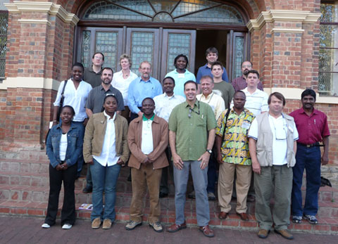

Workshop Participants

From left to right: Front row: Dorothy Nyingi, Donnielle Minor, Philippe Lalèyè, Hank Bart, Justin Mbimbi, Denis Tweddle, A. Manimekalan; Second Row: Monica Mwale, John Friel, Rashid Tamatamah, Frank Pezold, Mike Doosey; Third Row: Brian Sidlauskas, Paula Mabee, Paul Skelton, Mpho Ramoejane, Ray Schmidt, Nelson Rios; Back row: Ernst Swartz.
Participants from African Countries
Bénin
Philippe A. Lalèyè (laleye@bj.refer.org), Université d'Abomey Calavi, Fisheries scientist and a member of the PAFFA Organizing Committee.
Democratic Republic of Congo
Jose Justin Mbimbi (jjmbimbi@yahoo.fr), Université de Kinshasa, Field Associate at the American Museum of Natural History and Congo Project collaborator for fieldwork and ichthyological research.
Kenya
Dorothy Wanja Nyingi (dorothynyingi@yahoo.com), National Museums of Kenya, Nairobi. Fish taxonomy and systematics, morphometrics (traditional and geometric), population genetics and evolutionary history, aquaculture and fisheries biology, freshwater and marine ecology.
Nigeria
Alice olok Ekwu (ekwualice@yahoo.com), University of Uyo, Fisheries specialist.
Tanzania
Rashid Tamatamah (rtamah@udsm.ac.tz), University of Dar es Salaam, Conservation and sustainable fisheries.
South Africa (Hosts)
Paul Skelton (p.skelton@ru.ac.za), South African Institute for Aquatic Biodiversity, is Director of SAIAB, a specialist on African cyprinid fishes, and a member of the PAFFA Organizing Committee. He is official Host for the workshop and is assisting with meeting organization.
Ernst Swartz (e.swartz@ru.ac.za), South African Institute for Aquatic Biodiversity, is a member of the CToL team who specializes in African cyprinid systematics. He is serving as co-Host for the Workshop.
Monica Mwale (m.mwale@ru.ac.za), South African Institute for Aquatic Biodiversity. Molecular systematics, phylogeography and biogeography of marine fish and freshwater invertebrates.
Denis Tweddle (d.tweddle@ru.ac.za), South African Institute for Aquatic Biodiversity.
Gavin Gouws (g.gouws@ru.ac.za), South African Institute for Aquatic Biodiversity. Molecular systematics, phylogeography and biogeography of marine fish and freshwater invertebrates.
Mpho Ramoejane, South African Institute for Aquatic Biodiversity. Graduate Researcher. Cyprinids in the Eastern Cape.
Albert Chakona, , South African Institute for Aquatic Biodiversity. Graduate Researcher. Cyprinids in the Western Cape.
Olaf Weyl (O.Weyl@ru.ac.za), Senior lecturer, Department of Ichthyology and Fisheries Science, Rhodes University. Host Committee and leading the excursion to Addo Elephant Park.
India
A. Manimekalan (manimekalan@gmail.com), Institute of Forest Genetics & Tree Breeding, Coimbatore. Taxonomy, Distribution, Biodiversity and Conservation of freshwater fishes of Western Ghats.
USA Participants
Hank Bart (hank@www.tubri.org/museum), Tulane University Museum of Natural History, is a fish taxonomist and molecular biologist who specializes in sucker systematics. He is a Co-PI on the CToL Project. He is organizing the workshop and will moderate all of the discussions.
Paula Mabee (pmabee@usd.edu), University of South Dakota, is a fish developmental morphologist and a CToL Co-PI. She is also the PI of Phenoscape, an informatics effort to link morphological characters from fishes to developmental genetics and genomics.
Nelson Rios (nelson@www.tubri.org/museum), Tulane University Museum of Natural History, Natural History Collections and Biodiversity Informatics. He is an expert on biodiversity databases and networking. He developed an automated georefencing tool (GEOLocate) that is widely used in natural history collections. He also designed the CToL data portal.
John Friel (jpf19@cornell.edu), Cornell University, specializes is catfish systematics. He is a Co-PI on the All Catfishes Species Inventory and has extensive experience doing field research in Africa.
Frank Pezold (Frank.Pezold@tamucc.edu), Texas A&M Corpus Christi, specializes in goby systematics and has extensive experience doing field work in West Africa (Guinea).
Brian Sidlauskas (bls16@duke.edu), National Evolutionary Synthesis Center, Duke University, Morphology and Systematics of Characiform fishes.
Alfred Thomson (athomson@flmnh.ufl.edu), Florida Museum of Natural History, Graduate researcher, fish systematics.
Mike Doosey (mdoosey@tulane.edu), Tulane University, Graduate researcher, fish systematics.
Ray Schmidt (rschmidt@tulane.edu), Tulane University, Graduate researcher, fish systematics.
Donnielle Minor (wondersn_myeyes@yahoo.com), Dillard University, Undergraduate researcher, fish systematics.